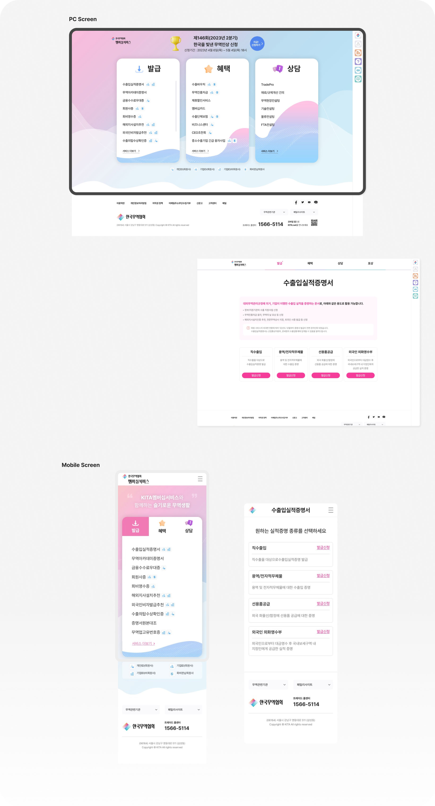
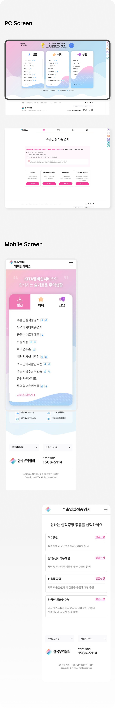

project preview
한국무역협회
무역지원서비스
2022.05
Scroll

overview
한국무역협회
한국무역협회 회원을 대상으로 무역실무에 필요한 상담, 혜택 , 발급 서비스를 제공하는 사이트입니다. 사용자
TASK 중심의 원페이지 화면 구성으로 불필요한 정보는 제거하고 메인화면에 주메뉴를 배치하여 편의성과 직관
성을 강조하였습니다. 2D,3D 아이콘, 카드 UI를 사용하여 트렌디함과 메뉴의 직관성을 제공하였습니다. 수많은
사이트 간의 이동 및 개인 서비스 이용시에도 편의성을 위한 퀵메뉴를 추가하여 편의성을 높였습니다.
- Client 한국무역협회
- Partner 도브투래빗
Design System
-
PretendardBold 당신의 글로벌진출 무역협회와 함께 하세요
-
프리텐다드Regular 당신의 글로벌진출 무역협회와 함께 하세요
- # FF98D0
- # 4DB9FF
- # F8BB9F
- # F29EC9
- # 6FAFDB
- # 64CEBC
온화한 하늘과 맑은 바다를 표현하는 Vivid Pink, Tiny Blue 색상을 메인 색상으로 사용합니다.
경쾌함과 온화함, 맑은 느낌의 포인트 색상을 사용합니다.

